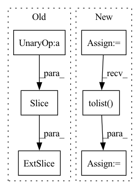

Pattern ID :14930

Before Change
out = pl_module(text, x, return_loss=False).long()
print(out.shape)
text_seq = out[:, :self.text_seq_len]
img_seq = out[:, -self.image_seq_len:]
xrec = pl_module.vae.decode(img_seq, feed_seq=True)
pl_module.train()
After Change
print(img_seq.shape)
xrec = pl_module.vae.decode(img_seq, feed_seq=True)
//generate sample
sample_text = text[:1]
token_list = sample_text.masked_select(sample_text != 0).tolist()
decoded_text = self.tokenizer.decode(token_list)
x_gen = pl_module.generate_images(text[:1], filter_thres=0.9) // topk sampling at 0.9
In pattern: SUPERPATTERN
Frequency: 3
Non-data size: 6
Instances
Fragment ID: 49800167
Project Name: tgisaturday/dalle-lightning
Commit Name: 8ef255a26f18e1cd62a9918a8b69890617f9b603
Time: 2021-07-26
Author: jamesk1228@gmail.com
File Name: pl_dalle/callbacks.py
M Class Name: DalleImageSampler
N Class Name: DalleImageSampler
M Method Name: on_train_batch_end(7)
N Method Name: on_train_batch_end(7)
M Parent Class: Callback
N Parent Class: Callback
M File Name: pl_dalle/callbacks.py
N File Name: pl_dalle/callbacks.py
M Start Line: 208
M End Line: 211
N Start Line: 206
N End Line: 222
'>
Before Change
pl_module.eval()
out = pl_module(text, x, return_loss=False).long()
text_seq = out[:, :self.text_seq_len]
img_seq = out[:, -self.image_seq_len:]
xrec = pl_module.vae.decode(img_seq, feed_seq=True)
pl_module.train()
After Change
x_rec = pl_module.generate_images(text[:1], img = x[:1], filter_thres=0.9) // topk sampling at 0.9
//generate sample without image
sample_text = text[:1]
token_list = sample_text.masked_select(sample_text != 0).tolist()
decoded_text = self.tokenizer.decode(token_list)
x_gen = pl_module.generate_images(text[:1], filter_thres=0.9) // topk sampling at 0.9
'>
Fragment ID: 49800166
Project Name: tgisaturday/dalle-lightning
Commit Name: 2581c994940a3ccb5d297681ac847d543a1a82bd
Time: 2021-07-26
Author: jamesk1228@gmail.com
File Name: pl_dalle/callbacks.py
M Class Name: DalleImageSampler
N Class Name: DalleImageSampler
M Method Name: on_validation_batch_end(7)
N Method Name: on_validation_batch_end(7)
M Parent Class: Callback
N Parent Class: Callback
M File Name: pl_dalle/callbacks.py
N File Name: pl_dalle/callbacks.py
M Start Line: 263
M End Line: 270
N Start Line: 276
N End Line: 331
'>
Before Change
**scaffolds, c_beta = n_aa!=4)
// add detached scn
if n_aa <=3:
new_coords[s, :-padding or None, n_aa:] = coords[:, n_aa:]
// add detachyed scn and =O, but not cbeta
elif n_aa == 4:
new_coords[s, :-padding or None, 5:] = coords[:, 5:]
After Change
* padding: int. padding token. same as in sidechainnet: 20
Outputs: whole coordinates of shape (batch, L, 14, 3)
atom_mask = atom_mask.bool().cpu().detach()
cum_atom_mask = atom_mask.cumsum(dim=-1).tolist()
device = backbones.device
batch, length = backbones.shape[0], backbones.shape[1] // cum_atom_mask[-1]
predicted = rearrange(backbones, "b (l back) d -> b l back d", l=length)
'>
Fragment ID: 49800163
Project Name: lucidrains/alphafold2
Commit Name: af52b14b8943a19879fb5d9c6829f0d64d4717f9
Time: 2021-05-25
Author: ericalcaide1@gmail.com
File Name: alphafold2_pytorch/utils.py
M Class Name: AnonimousClass
N Class Name: AnonimousClass
M Method Name: sidechain_container(5)
N Method Name: sidechain_container(5)
M Parent Class:
N Parent Class:
M File Name: alphafold2_pytorch/utils.py
N File Name: alphafold2_pytorch/utils.py
M Start Line: 663
M End Line: 703
N Start Line: 659
N End Line: 697